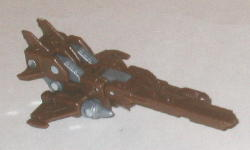
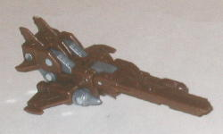

Safeguard
Safeguard

Allegiance : Mini-Con
Size : Mini-Con
Difficulty of Transformation : Very Easy
Color Scheme : Chocolate brown and some moderately light milky gray and silver
Individual Rating : 6.6
(NOTE: Because this set is a repaint, this
is not a full-blown review. This mainly covers any changes made to the
set and the color scheme, and merely compares it to Cybertron Vector Prime
w/ Safeguard. For a review on the mold itself, read the review of Cybertron
Vector Prime w/ Safeguard
here
.)
Safeguard

Allegiance
: Mini-Con
Size
: Mini-Con
Difficulty of Transformation
: Very
Easy
Color Scheme
: Chocolate brown and
some moderately light milky gray and silver
Individual Rating
: 6.6
As it's always been,
Safeguard's color scheme is more of a "side effect" of Vector Prime's,
rather than its own thing. He's almost entirely brown, with a tad of gray
and silver, which is more visible in robot mode. However, palette-wise
the silver is essentially the same as the gray and having a Minicon with
only two colors on him just doesn't look that great-- he's rather dull
and boring-looking. A bit more paint detailing really would've lightened
this guy up. I think he looks a little better than the
Cybertron
"Galaxy Force" version
of him, but he's still too dull.
No mold changes have
been made to Universe 2.0 Safeguard.
 Vector
Prime
Vector
Prime
Allegiance
: Autobot
Size
: Voyager
Series
: Cybertron
Difficulty of Transformation
: Easy
Color Scheme
: Black, chocolate brown,
silver, and some blue, transparent brownish amber, light bluish green,
and moderately light milky gray
Individual Rating
: 9.5
This redeco of Vector
Prime is an homage to "The Last Autobot", a character in the Marvel G1
comics. "The Last Autobot" had a somewhat similar alt mode, which is the
reason for the homage. Homage aside, however, this is still a great color
scheme-- black, brown, and silver go together very well, especially in
the amounts on this toy. The brown also makes him look a bit older and
"broken down/rusty", which is appropriate for the character. I wish there
was a few more silver paint applications near the front nosecone-- or,
heck, any paint applications-- but that's my only real beef with how the
paint is distributed on the figure. It particularly looks good in robot
mode,
where the paint seems more evenly spread out on the toy, with the silver
framing practically every major part of the figure (though a bit more on
the legs would've worked wondered). The bits of blue used here and there
as an accent color are the cherry on top-- they really contrast extremely
well with all of the other colors, and using it for stuff like the tips
in the armor plating and on the shoulders and feet really looks nice and
just adds a bit of a "finished" touch to it. I also really like the greenish
eyes, they really stand out against the surrounding colors.
No mold changes have
been made to Universe 2.0 Vector Prime-- so he still has those wings made
of bendy plastic that tend to stick in a weird curved position, unfortunately.
Universe 2.0 Vector Prime w/ Safeguard is a really nice paint homage to "The Last Autobot", but even ignoring that it's a great color scheme, with all of the colors working together and contrasting against each other very nicely. He could use a few more paint apps in parts such as his nosecone, wings, and robot legs, but other than that he's just about perfect color-wise. My favorite of the (mass-release) color schemes this toy has gotten-- recommended if you haven't picked up this mold yet.
Review by Beastbot